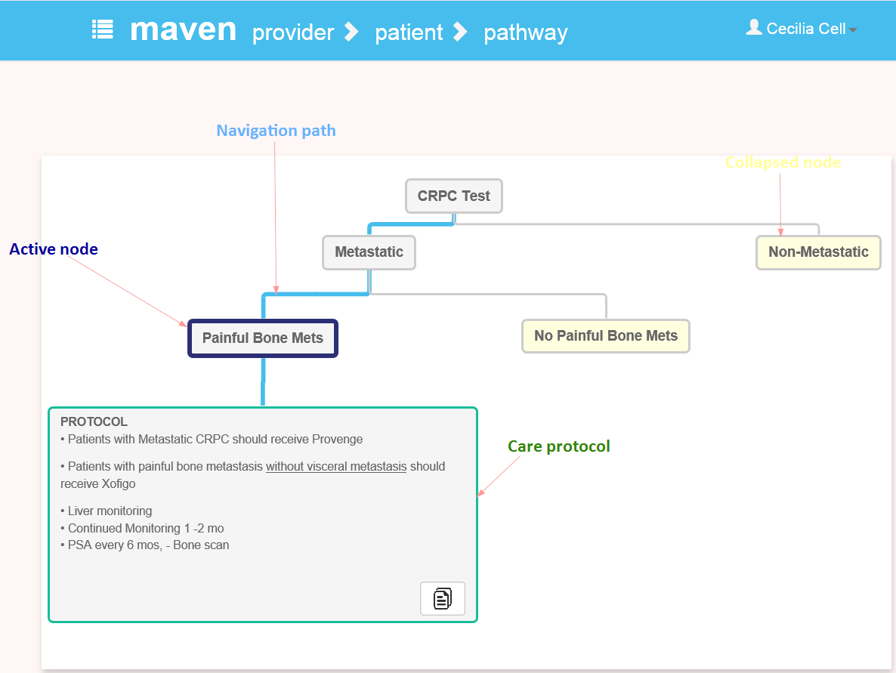

Navigating starts by clicking on a node, and working down the decision tree. The tree path changes from gray to providing a visual cue of the selected path. Your active node, or most recent click is outlined in purple, and a yellow shaded box indicates a collapsed node. A care protocol is the final node for a branch, and is indicated by the green outline. This protocol can be copied and pasted to your EHR by clicking the copy icon.
